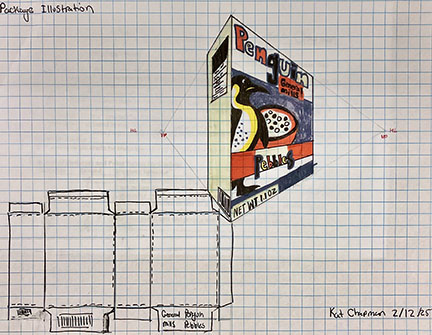

Sketching |
||
| home Cereal Box Project Commercial Project Bookmark Project | ||
|
 |
The Goal of this project was to create an isometric and orthographic image of a packaged product, in our case cereal boxes. Previously, we had worked on traditional sketching techniques in various perspectives, one, two, and three. We first observed the elements typically found in cereal boxes. We then selected a name/brand for the cereal based on our own creative thought. We studied commercial products first, and as such, were influenced by the examples we studied from life. Popular elements like a mascot often featured with a bowl of the product itself and page formatting were examples of popular established elements we manipulated to personalize. We were required to deconstruct an actual sample cereal box to understand how the package looks flat, and how it is assembled into a 3- dimensional form. Then we had to sketch an accurate 2-point perspective of the flattened package, an orthographic sketch and Isometric sketch, 3-point perspective. | |